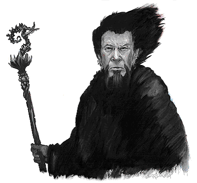
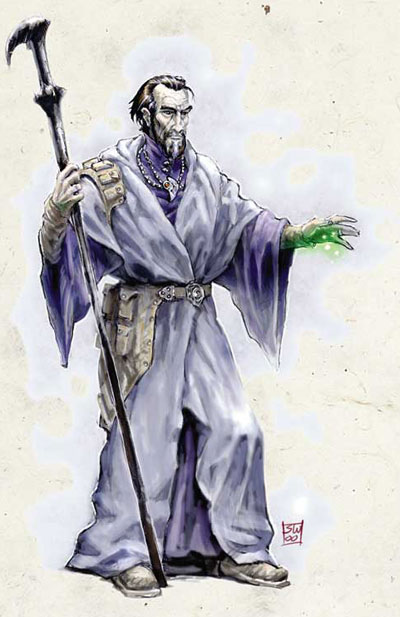

Khelben "Blackstaff" Arunsun 卡尔本“黑杖”
人类男性（密斯特拉的选民）
力量14，敏捷16，体质26，智力22，知觉20，魅力15；
24级法师/3级大法师；总级别27；挑战级别31；
中等体型类人生物（人类）。生命骰24d4+192+3d4+24；生命值284；
优先加权值＋3；
速度30尺；
防护等级30（接触20，措手不及27）；
攻击附加值＋19/＋14近身（1d6+5，黑杖）或＋17/＋12远程接触（通过法术）
特殊能力：arcane reach奥术延伸，mastery of counterspelling抗魔掌握，mastery of elements元素掌握，chosen immunities选民免疫力，chosen spell-like lities选民类法术能力，detect magic魔法探测，enhanced constitution体质属性提升，enhanced wisdon智惠属性提升，silver fire银火；阵营守序中立；豁免判定：坚忍＋19，反射＋14，意志＋24；身高6尺。
技能与特技：
alchemy炼金术＋26，bluff欺诈+4，concentration集中精神＋32，craft(painting)手艺（绘画）+11， diplomacy交际＋4，gather information收集信息+4，intimidate胁迫＋7，knowledge(arcana)知识（奥术）＋30，knowledge (Waterdeep history)知识（Waterdeep历史）＋11，knowledge(Waterdeep local)知识（Waterdeep地域文化）＋16，knowledge(the planes)知识（位面）＋16，knowledge(religion)知识（宗教）＋11，perform(drama)表演（戏剧）＋4， ride（horse)骑乘(马）＋4，scry占卜＋25，search搜寻＋10，sense motive察觉动机＋9，spellcraft法术知能＋34，spot察辨＋7，wilderness lore野外求生+8；Artist(painter)宝物（艺术品），craft staff制造法杖，craft wondrous item制造玄奇物品，forge ring铸戒，heighten spell增强法术，improve spell capacity（10th）提升法术能力（10级），iron will钢铁意志，persistent spell持久法术，quicken spell快速施法，scribe scroll撰写卷轴，skill focus（spellcraft）技能强化（法术知能），skill focus(transmuration)法术强化（改变系），skill focus(evocation)法术强化（塑能系），spell mastery法术掌握(blackstaff黑杖,chain lightning连环闪电,fly飞行,magic missile魔法飞弹,teleport without error无误传送),still spell 静止法术，twin spell法术倍效，weapon focus武器熟练（quarterstaff长杖）
特殊能力说明：
奥术延伸：卡尔本的接触法术射程延长为30ft。
元素掌控：卡尔本可以将一个法术的伤害形式（火冰酸电）转化为另一种。
抗魔掌控：卡尔本成功抵挡了一个魔法时，他可以立刻把这个法术反射给攻击他的施法者。
法力增长＋4（总计）。
选民免疫力：卡尔本对blindness制盲，circle of death死亡之环，disintegrate湮灭，energy drain能量汲取，forcecage力量牢笼，ice storm冰风暴，lightning bolt闪电术，magic jar魔法震，magic missile魔法飞弹，otto's irresistible dance，以及可造成相同效果的攻击完全免疫。
选民类法术能力（均为每日1次）：Alustriel's fang,antimagic field反魔法护罩,brain spider（使用者可读取最多八个人的想法并找出更多的相关咨讯）,gauntlet（将一只手以力量覆盖，减轻30/-伤害，并使得别人无法接触它，但同时这只手也不能用来施法）,minor spell turning小型法术反射（类似spell turning法术反射，但只对1d4个法术等级起作用而且不能准确反射）,Muirara's map（显示一张由精神力构成的地图，包括施法者的位置，其他人的位置以及施法者知道的两个路标）,the Simbul'sskeletal deliquescence（将受术者变成一只凝胶怪）,sphere of wonder（一个不可见的护罩，施术者可以决定哪种法术效果可以穿透这个护罩）,wraithform，Simbul's synostodweomer（将已准备好的法术转为医疗术，每法术等级医疗2点生命值）；
魔法探测（超自然能力）：视野内；
体质属性提升：密斯特拉选民模板使卡尔本体质＋10；
智力属性提升：卡尔本以许愿术提升智惠属性，他智惠属性的天生奖励是＋4；
银火。
每日可用法师法术：4/6/6/5/5/5/5/2/3/4/1。基本困难等级＝16＋法术等级，塑能系与改变系法术为18＋法术等级。施法等级27级。
持有物品：
The black staff 黑杖（上面赋有永久性的blackstaff法术，每次击中都会以8级施法者的水平在目标上施展dispell/各种精神法术/令被几击中的施法者失去一个准备好的法术/失去一个未用的法术记忆空间）
ring of protection+5 防护戒指＋5
bracers of armor+10 防御护腕＋10
ring of spell turning 法术反射戒指
pearl of power(8th) 力量珍珠
pearl of power(9th) 力量珍珠
